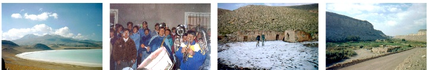

Atacama 2000
No carnaval de 2000, eu e o MárcioMan, amigo e colega de trabalho na Conectiva, tiramos férias juntos e fomos fazer um passeio pela América do Sul. Saímos de Curitiba tendo como objetivo principal o Deserto do Atacama no norte do Chile, do outro lado do continente. A condução foi a minha intrépida e trepidante Toyota Bandeirante 89.
No acaso, acabamos conhecendo mais três desajustadas, a Gisele, a Sílvia e a Lisandra, que estavam querendo ir pra aqueles lados também e fomos juntos até o deserto. O detalhe massa é que elas foram num Corsa 1.6, alugado! Lá no deserto nos separamos e, enquanto elas subiram a norte até Iquique para depois voltar a Curitiba, eu e o Márcio continuamos indo ao sul, até Santiago, depois Buenos Aires, Costa Uruguaia, Chuí e finalmente voltamos para casa.
Saímos dia 5 de março, a viagem durou 25 dias e rodamos mais de 9000 km, passando por 4 países (Brasil, Argentina, Chile e Uruguai).

Atacama 2001
Um ano depois, a história se repete: Carnaval + TOYOTA + Atacama.
Mas desta vez apenas até o deserto, sem descer a Santiago ou passar pelo Uruguai. A idéia é realmente sentir a rotina do deserto, fazer parte dele e esquecer do resto do mundo.
Os intrépidos aventureiros dessa vez foram eu, meu primo Júnior (também conhecido como Feio ou Nelson) e meu tio Roberval. Esta foi uma viagem de família :)
Saímos dia 25 de fevereiro, a viagem durou 14 dias e rodamos 6000 km, passando por 3 países (Brasil, Argentina e Chile).

E você, também vai?
Está planejando ir para o deserto também? Deve estar cheio de dúvidas que eu sei :)
Aqui estão algumas informações que vão te ajudar em sua viagem. Leia tudo com muita calma, siga os links, saboreie os textos.
- FAQ - Perguntas Freqüentes - Tire suas dúvidas!
- Álbum de fotos - É lindo
- Mapas do roteiro - Mapas, cidades, estradas e histórias
- Roteiro / Itinerário completo - Horários, quilometragem, abastecimento e pedágios
- Dinheiros - Quanto custou a brincadeira?
Depoimento
por Aurelio Marinho Jargas www.aurelio.net
O deserto do Atacama é outro mundo. Um mundo árido e solitário, com uma paisagem hostil porém encantadora. Estando lá é fácil imaginar-se caminhando sob a superfície da Lua, ou ainda, ter a sensação de você ser o único sobrevivente de um desastre que devastou o planeta. É um encontro inesquecível com você mesmo.
Não há nada. Imagine qualquer coisa: lá não tem. Olhe ao seu redor agora. Tudo o que você está vendo, não existe lá. Prédios, asfalto, carros, fumaça, barulho, pessoas, animais, luzes, eletrônicos, madeira, água, árvores, plantas. Nada. São quilômetros de pedra, areia e sal. Esta é a real beleza do deserto: a natureza em seu estado mais cru.
Fui duas vezes, de carro, saindo de Curitiba. É uma viagem que leva dias, sem muitos atrativos pelo caminho. Três mil longos quilômetros. Quando você pensa que não vai agüentar mais tanta estrada, percebe que ainda está na metade do trajeto. Mas ao ver o deserto pela primeira vez, todo o sofrimento e desconforto desaparecem, ficando na cabeça somente uma frase: "Valeu a pena".
Fomos com pouco dinheiro, sem mapas, sem roteiro, sem planejamento, sem experiência, sem revisão no carro e sem muita noção do que encontraríamos. Só tínhamos mesmo a vontade de conhecer o deserto.
É uma grande aventura, porém não é tão difícil quanto parece. Não pense muito, não deixe o medo esfriar sua empolgação. Vou te dar um conselho que vale ouro, escute com atenção: vá.
Mensagem final
"Fomos sem planejamento, sem roteiro, sem muito dinheiro, sem experiência e sem revisão no carro. Só tínhamos a vontade e o tempo. Encorajo qualquer um que tenha a oportunidade, a fazer essa viagem. É MUITO massa."